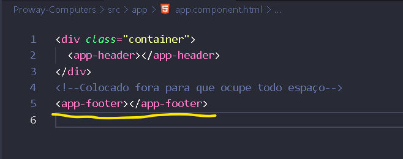
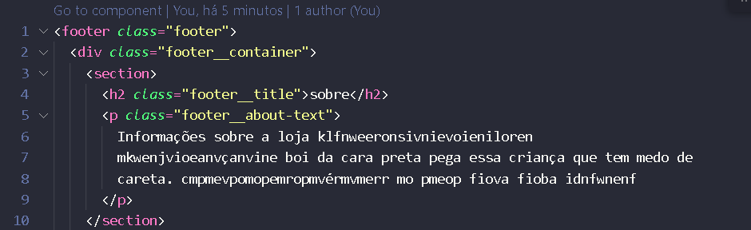
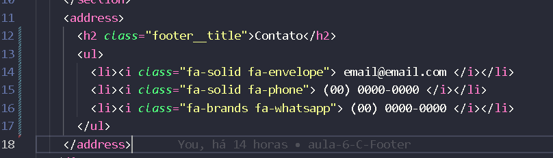
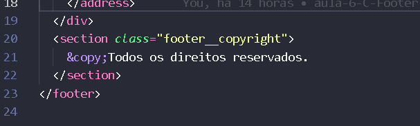

Footer, Rodapé
O footer, rodapé será criado e ficará em todas as páginas do site.
Para isso deve gerar um novo componente, usando esse comando no pront
de comando ng g c footer.
Já vai no componente app.component.html, e adiciona o que
estamos criando, mas coloque depois da "div", por que vai ter que
ocupar todo espaço.
Como na imagem abaixo:

No footer.component.html, coloque essas tags:
"footer", com a classe de nome "footer",
"div", com a classe "footer__container", que vai colocar tudo dentro
de um container
"section", uma seção para separar os dados do site
"h2" classe = "footer__title", que será o titulo desse trecho da
página
"p" paragráfo, descrevendo sobre a empresa, comércio, loja,etc..
Fecha o "p" paragráfo, e fecha a "section".
Como fica na imagem,abaixo:

Abre uma nova tag:
"address", para colocar os endereços online da empresa,comércio,...
"h2" classe ="footer__title", com o nome "Contato".
"ul" para cria uma coluna
"li" coloque um iconi de email, depois será adicionado o email
"li" coloque um iconi de telefone, depois deve ser adiciona o
telefone
"li" coloque um iconi de whatsapp, depois será adicionado um número de
whatsapp
Feche a "ul" = /ul, feche o "address"
Feche a "div", e a "section".
Como na imagem abaixo:

Criando um copyright do site, crie essas tags:
"section" classe="footer__copyright, dentro dela coloque
"&_copy_:" com o texto: "todos os direitos reservados".
Fecha a "section", veja como fica na imagem abaixo:

Styles.
Para os estilos, usar os styles, eles estão na pasta adicional
"footer", que está nos arquivos.
Basta copiar , para o footer.component.css, para